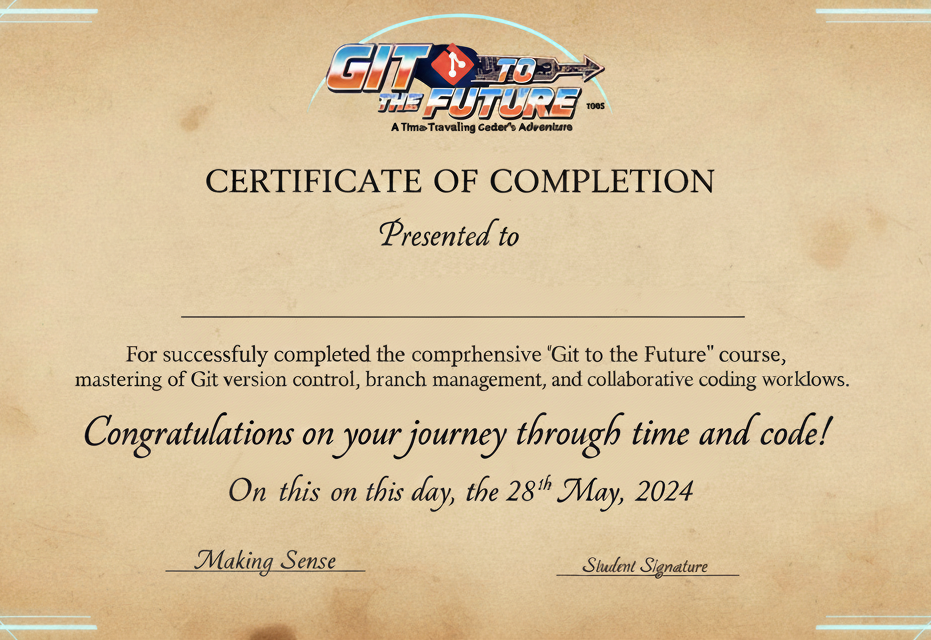

Certificado de Finalización
Has completado exitosamente Git to the Future y dominado los fundamentos de control de versiones navegando a través de la saga de Back to the Future.
Habilidades Adquiridas
Inicialización de repositorios • Commits y staging • Gestión de ramas • Merges y rebases • Resolución de conflictos • Trabajo con remotos • Cherry-pick y stash • Historial y navegación
